面向语音与多模态伪造检测的安全评估方法与防护系统研究
Research on Security Evaluation Methods and Defense Systems for Speech and Multimodal Forgery Detection
汇报提纲
研究背景：深度伪造技术快速发展
语音伪造
TTS、语音转换和语音克隆降低身份仿冒门槛。
视频伪造
换脸与表情驱动技术提升视觉伪造真实度。
音视频联合伪造
声音、口型与语义可被同步操控，单模态检测不足。
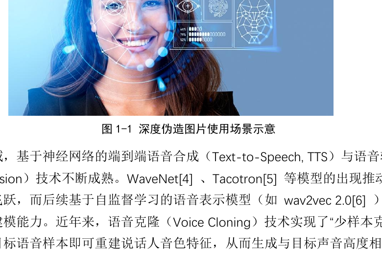
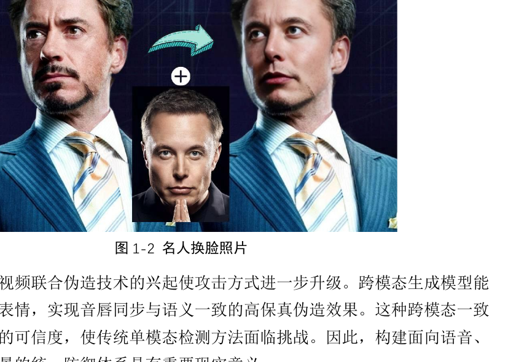
核心挑战
匿名语音仍可能泄露身份
传统评测难以刻画深层表示空间中的身份可分性。
视频检测泛化不足
不同伪造方法留下的痕迹差异明显，固定特征难以适配。
多模态异常难建模
音频、视频、语义之间存在复杂时序关联和跨模态耦合。
算法缺少部署载体
实际语音安全需要低延迟、低功耗、可嵌入的防护方案。
整体技术路线
到多模态检测
再到硬件防护系统
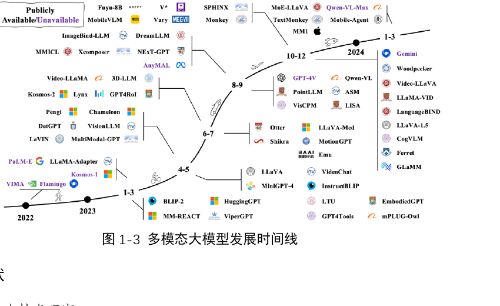
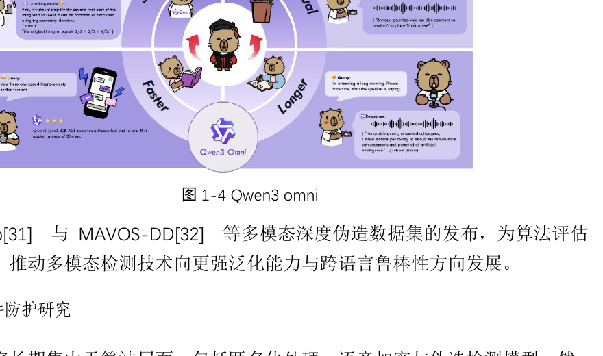
论文主要贡献
工作一：SpecWav-Attack
基于频谱增强与自监督表示学习，评估匿名语音中的残余身份信息。
工作二：SFE-Net
借鉴差异基因表达机制，构建动态特征选择的视频伪造检测网络。
工作三：AV-LMMDetect
利用多模态大模型进行音视频联合伪造检测和开放集泛化分析。
工作四：ASV+ADD 系统
实现说话人认证与音频伪造检测级联的双因素语音安全装置。
背景图表如何支撑答辩叙事
先讲威胁，再讲技术来源
图 1-1 和图 1-2 用于说明深度伪造已经具备真实场景欺骗性；图 1-3 和图 1-4 用于自然引出“为什么音视频联合检测可以借助多模态大模型”。
- 左侧图回答“为什么要做安全评估与防护”。
- 右侧图回答“为什么工作三采用多模态大模型”。
相关理论图表与后续工作的对应关系
这一页不是背景堆图，而是过渡页
卷积、Transformer、语音表征和生成模型分别对应后续三个核心方法：SFE-Net 的视频特征、SpecWav-Attack 的语音表示、AV-LMMDetect 的多模态建模。
- 讲工作一时重点回到 wav2vec2、梅尔频谱和 ECAPA-TDNN。
- 讲工作二时回到卷积与视频特征提取。
- 讲工作三时回到 Transformer 和生成伪造模型。
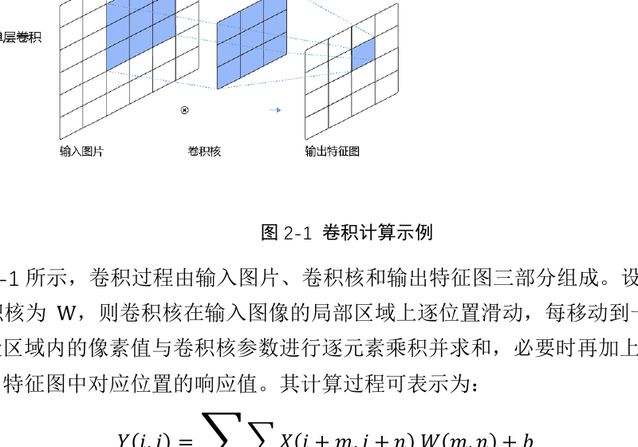
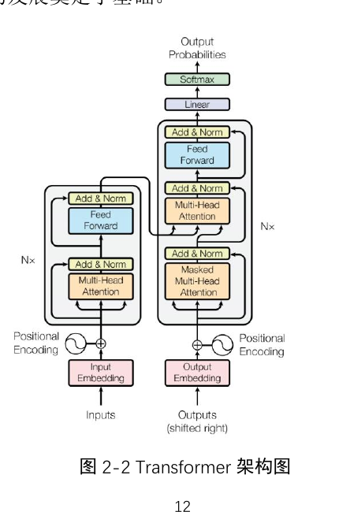
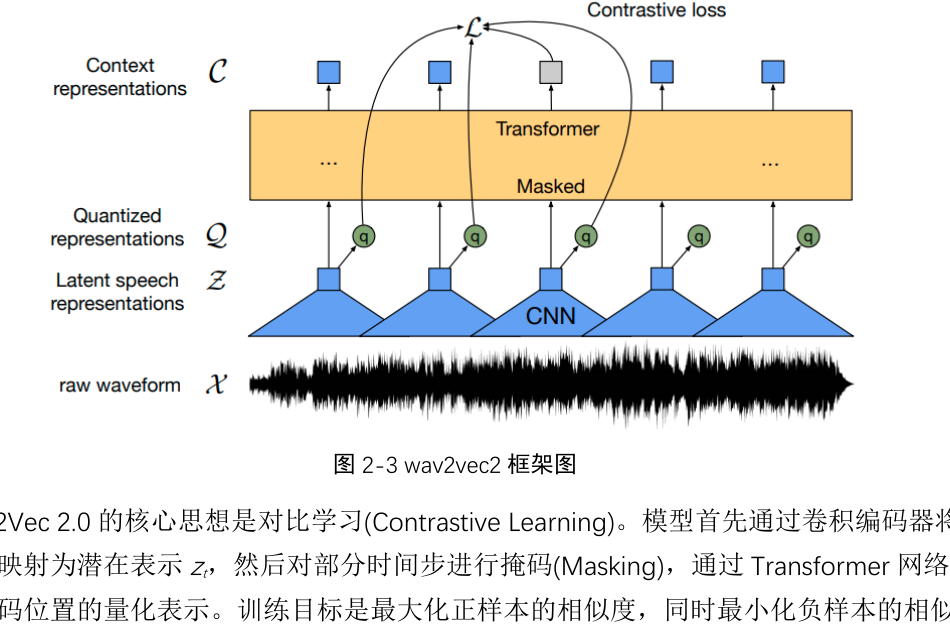
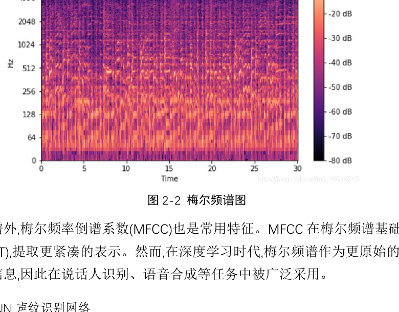
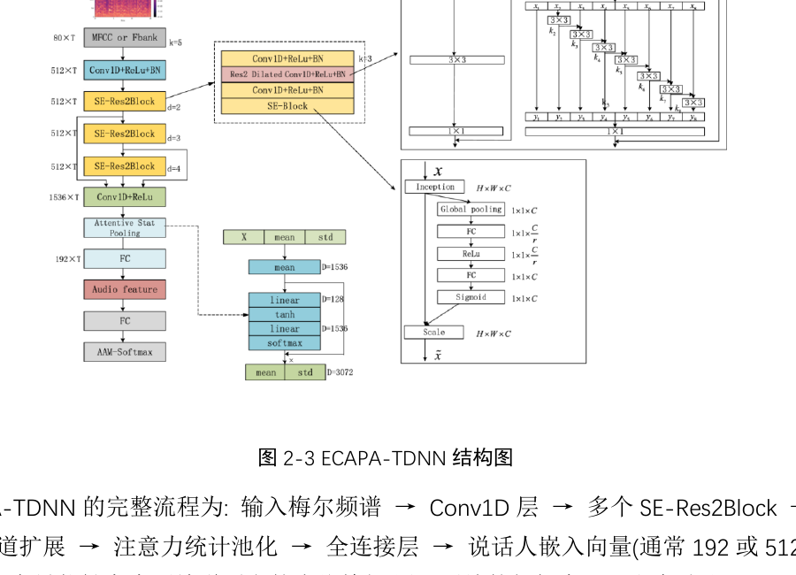
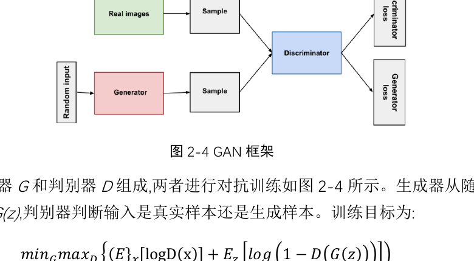
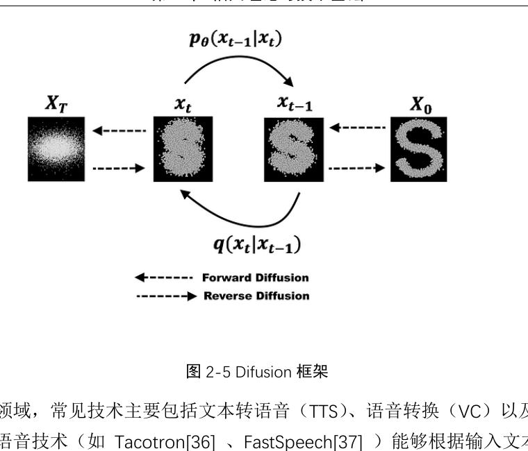
工作一：语音匿名化安全评测问题
研究问题
匿名语音在可懂度保持的同时，是否仍在高维表示空间中保留说话人相关信息？
不等于
身份信息完全消除
SpecWav-Attack 方法框架
波形输入
深层特征
身份判别
强表示
自监督语音表征保留高层身份线索。
强扰动适配
频谱重采样模拟匿名化后的音色变化。
强判别
说话人嵌入模型量化身份残留。
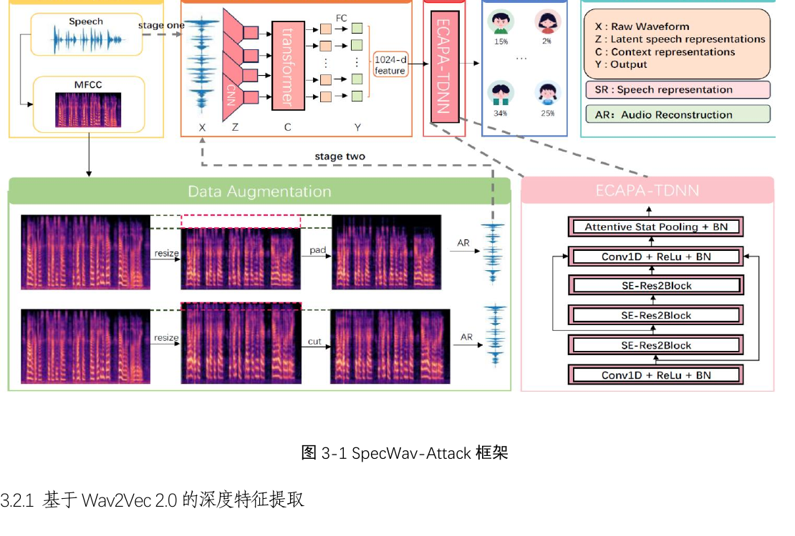
频谱增强与两阶段训练
频谱调整增强
两阶段增量训练
LibriSpeech 原始语音
Epoch 1-10
SR 增强数据
Epoch 11-12
论文训练曲线显示：进入增强阶段后，训练损失和验证损失均进一步下降。
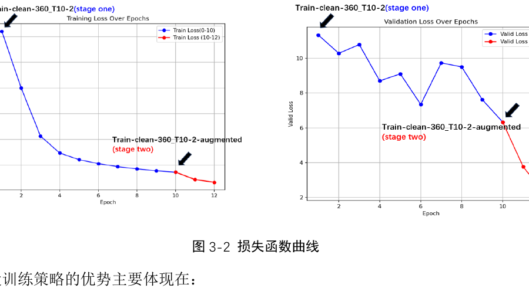
实验设置：VoicePrivacy 场景
训练集
LibriSpeech train-clean-360，约 921 位说话人，并构造等量频谱增强数据。
测试集
librispeech-dev 与 librispeech-test，各包含 40 位说话人。
评估指标
等错误率；在匿名化安全评测中，EER 越低表示残余身份越容易被识别。
实验结果：攻击能力提升
LibriSpeech-test 关键对比
最优可见结果
LibriSpeech-test T10-2(SW) EER
主要结论
Wav2Vec 2.0 表示、ECAPA-TDNN 架构、频谱增强策略和两阶段训练形成协同增益。
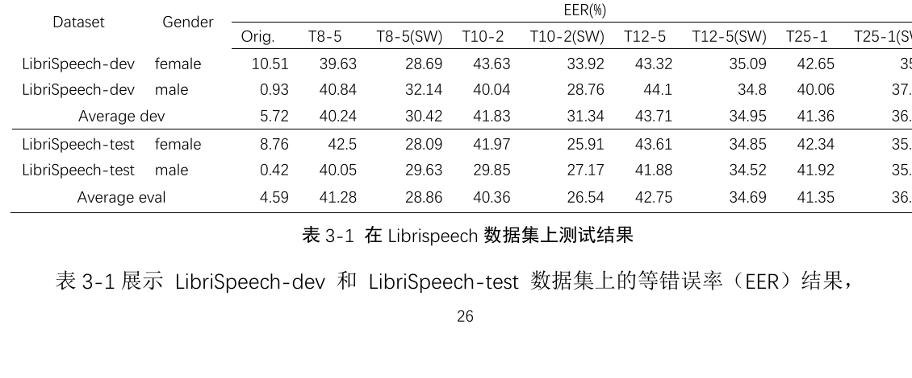
工作一小结
发现风险
匿名语音在深层表示空间中仍存在可分身份结构。
提出方法
SpecWav-Attack 将自监督表示、频谱增强与说话人嵌入模型结合。
评测价值
可作为匿名化系统隐私保护能力分析和改进的实验依据。
工作一图表讲解路径
工作二：视频伪造检测问题
问题挑战
视频深度伪造痕迹存在多样性：光照、纹理、高频、压缩、形态等特征差异明显。
方法局限
固定特征提取难以适应多种伪造类型，限制跨数据集泛化能力。
目标
从多类互补特征中动态选择更具判别力的关键信息。
伪造痕迹异构性
SFE-Net 核心思想
生物启发
细胞包含完整基因集合，但会在不同环境刺激下有选择地激活或抑制特定基因。
检测映射
将不同伪造痕迹特征视为“表达单元”，根据输入样本动态调整各分支权重。
五类互补特征提取模块
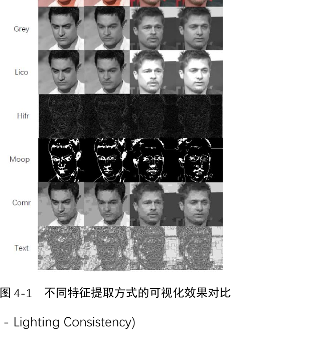
SFE-Net 网络结构
动态特征激活
用权重选择当前样本最关键的伪造线索。
时序建模
均匀采样 16 帧，通过双向 LSTM 捕捉动态异常。
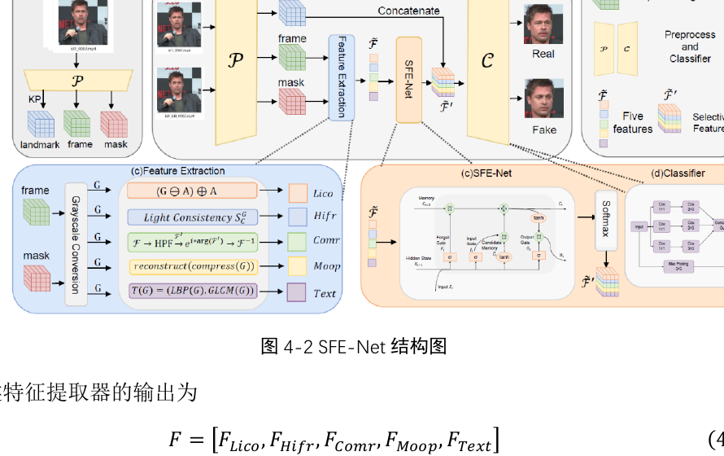
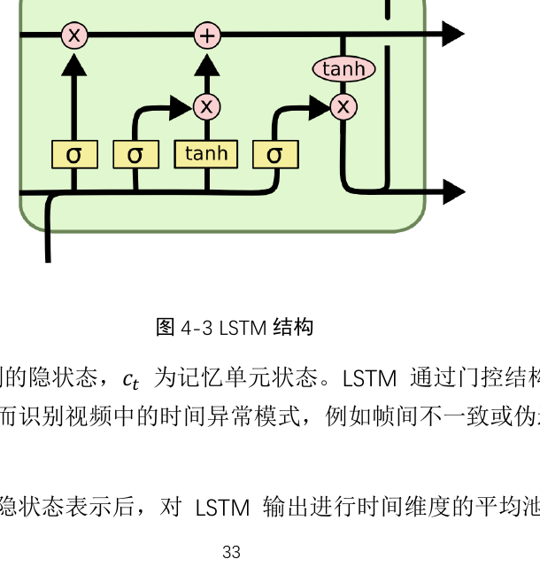
跨数据集实验设置
训练数据
FaceForensics++，包含真实视频以及 FaceSwap、DeepFakes、Face2Face、NeuralTextures 等伪造方式。
测试数据
使用 AUC 衡量跨数据集整体检测性能。
跨数据集结果：平均 AUC 最优
代表方法平均 AUC
SFE-Net 各测试集 AUC
CDF-v1
CDF-v2
DFD
DFDC
DFDCP
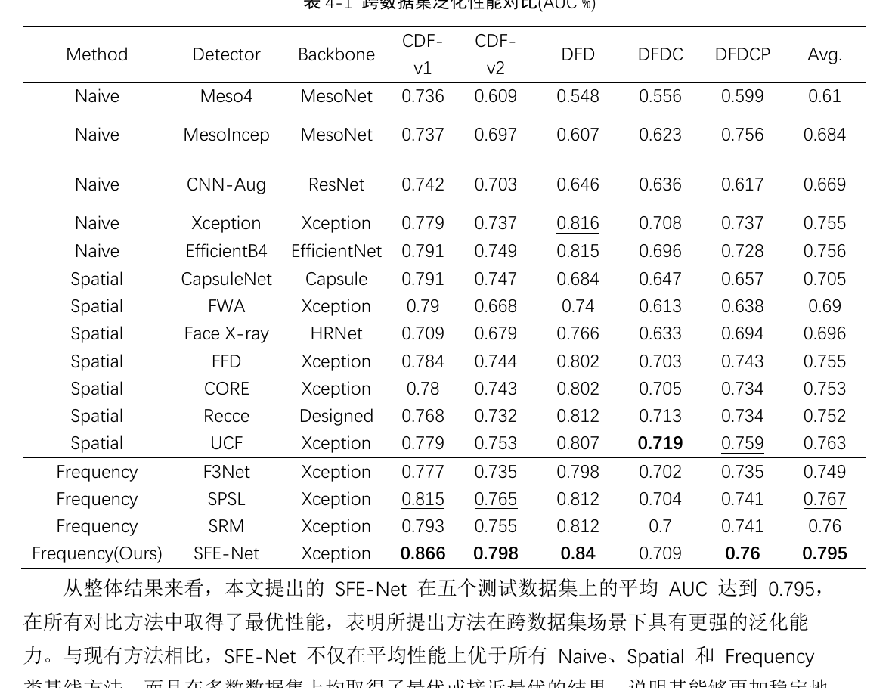
消融实验：模块有效性
单分支与融合对比
五特征直接融合
多类特征存在互补性。
五特征 + SFE-Net
动态选择进一步突出关键判别线索。
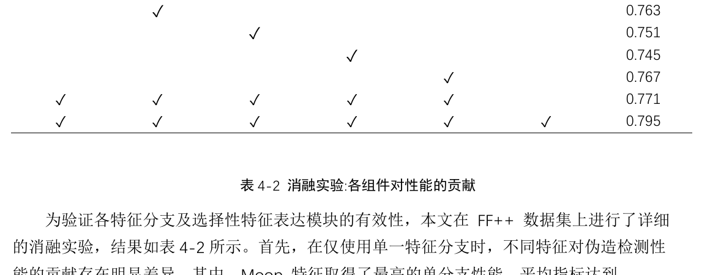
工作二小结
设计思路
用生物启发式选择性表达解决固定特征范式自适应不足。
模型结构
五类特征提取 + 动态门控 + 特征融合 + LSTM 时序建模。
实验结论
在跨数据集平均 AUC 上达到 0.795，优于多类基线方法。
工作二图表讲解路径
讲解顺序
先看“特征为什么要多样”，再看“网络如何选择”，最后用跨数据集和消融表证明这个选择机制确实有效。
工作三：音视频联合伪造检测问题
单模态方法局限
跨模态一致性线索
AV-LMMDetect 框架
视觉编码
视频帧映射为视觉 Token。
音频编码
音频信号映射为音频 Token。
统一推理
多模态 Token 进入大模型主干。
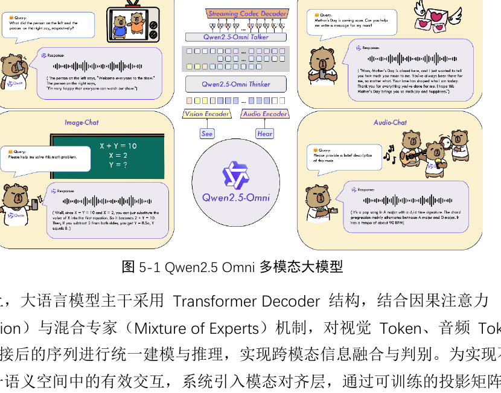
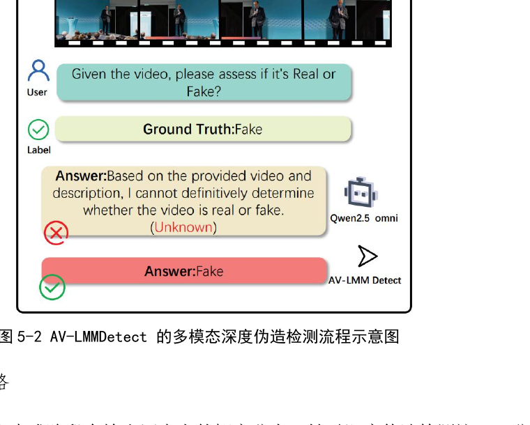
音视频联合输入设计
模态预处理
统一输入序列
任务问题：Given the video, please assess if it's Real or Fake?
检测任务被转化为多模态问答问题。
Top-2 Token 预测策略
分类方式
更高推理效率
更稳定二分类
两阶段监督微调策略
阶段一：LoRA 任务适配
阶段二：联合微调
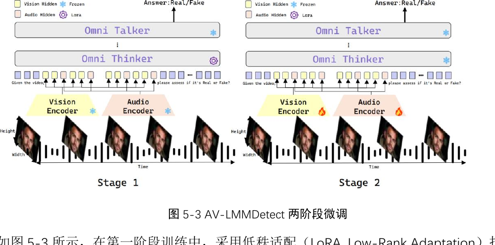
FakeAVCeleb 实验结果
代表方法对比
AUC
FakeAVCeleb 测试集
Accuracy
与 AVFF 处于同一性能水平，AUC 略高。
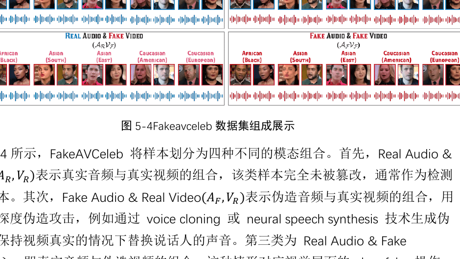
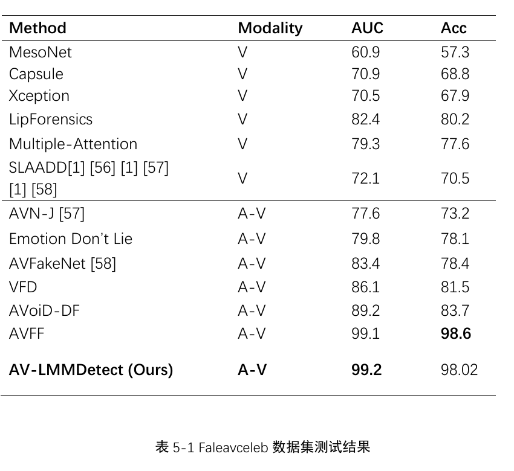
MAVOS-DD 开放集评估
| 场景 | mAP | AUC | Acc | 含义 |
|---|---|---|---|---|
| In-domain | 0.97 | 0.97 | 92.92% | 同分布 |
| Open-set model | 0.98 | 0.94 | 87.91% | 未见模型 |
| Open-set language | 0.88 | 0.90 | 85.58% | 未见语言 |
| Open-set full | 0.96 | 0.92 | 85.09% | 未见语言和模型 |
跨模型
Open-set model mAP 达到 0.98。
跨语言
Open-set language 下保持较高 AUC。
复杂开放集
Open-set full Acc 85.09%。
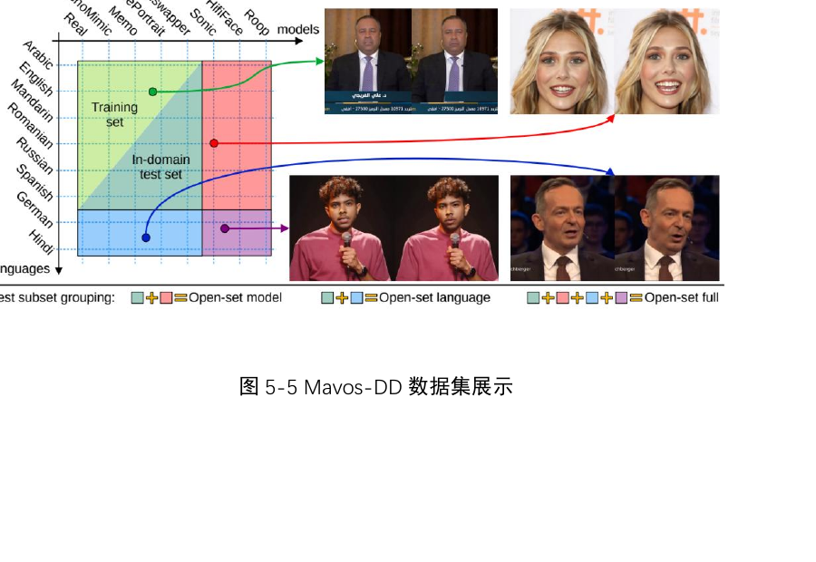
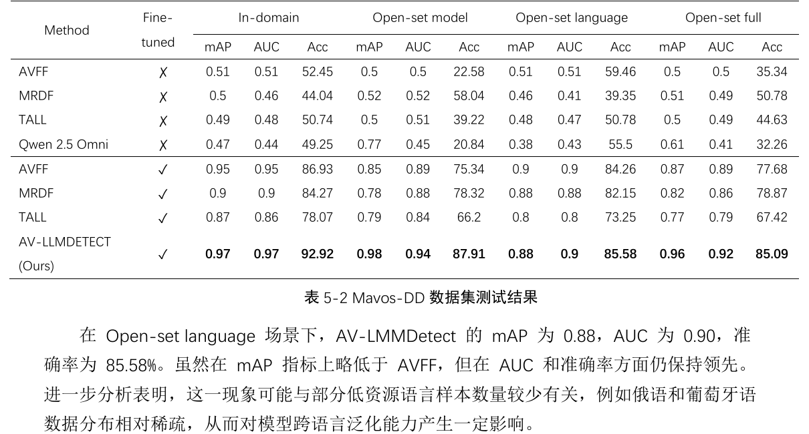
工作三小结
统一建模
将音频、视频与文本问题统一为多模态输入序列。
高效判别
Top-2 Token 策略直接输出 Real/Fake 概率。
泛化提升
两阶段 SFT 在两个数据集上均获得强性能。
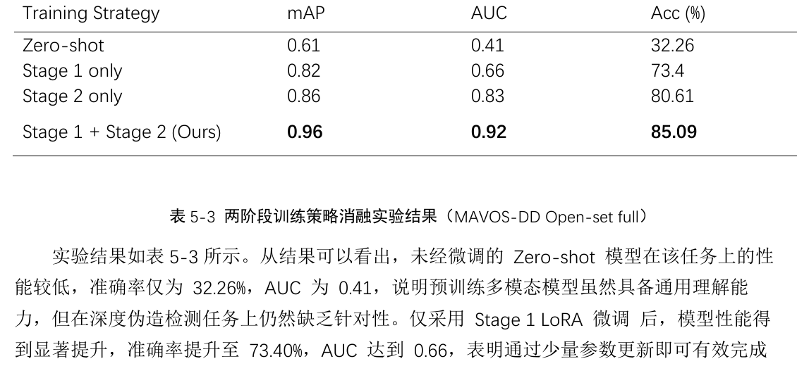
工作三图表讲解路径 I：方法与数据
工作三图表讲解路径 II：开放集与消融
工作四：语音安全系统问题
现有问题
且
语音真实
才允许通过
ASV+ADD 双因素级联系统
身份认证
真伪检测
联合决策
| ASV 结果 | ADD 结果 | 最终决策 | 含义 |
|---|---|---|---|
| Accept | Real | Allow | 身份匹配且语音真实 |
| Accept | Fake | Deny | 身份匹配但语音伪造 |
| Reject | Real | Deny | 未授权用户 |
| Reject | Fake | Deny | 未授权且伪造 |
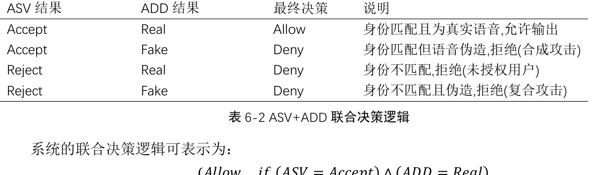
硬件实现与信号流
处理流程
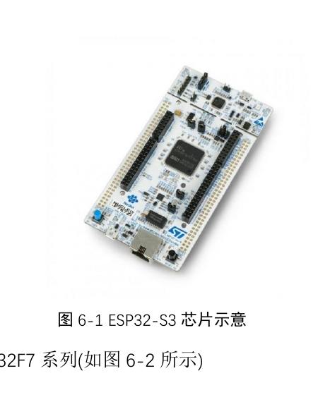
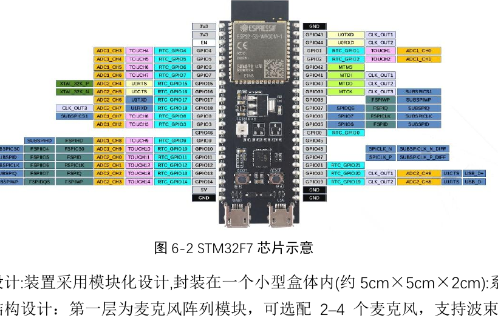
芯片与封装
模块化盒体约 5cm x 5cm x 2cm，包含麦克风阵列、主控 PCB 和供电模块。
应用场景与系统指标
应用场景
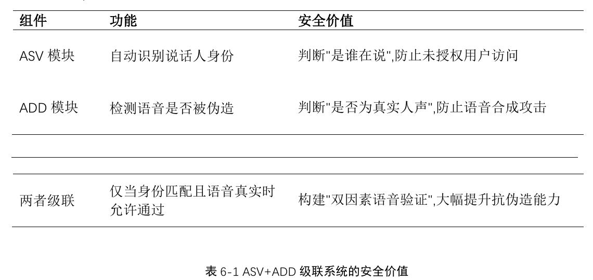
论文给出的系统测试指标
ASV EER
ADD AUC
攻击拒绝率
端到端延迟
工作功耗
误拒率
工作四图表讲解路径
全文总结与未来展望
全文总结
未来方向
数据核对备注：本 PPT 主要使用各章实验表格中的可见指标。论文总结章个别指标与实验表格存在不一致，讲稿备注中保留核对提醒。
谢谢各位老师
敬请批评指正
讲稿备注文件：speaker-notes.md